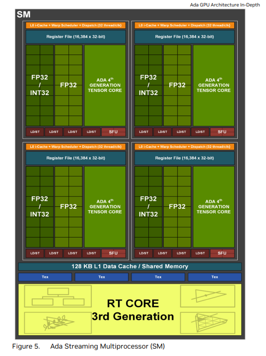
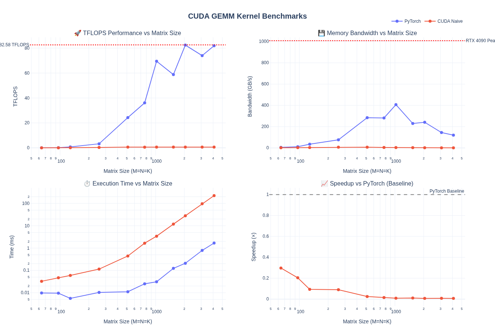
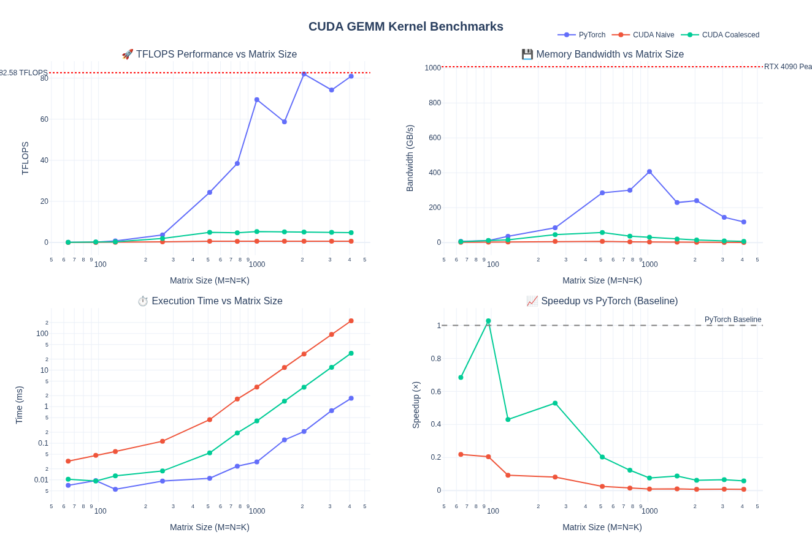
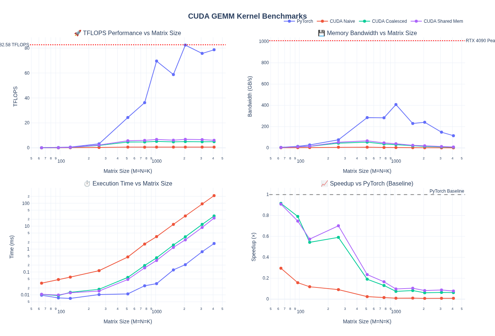
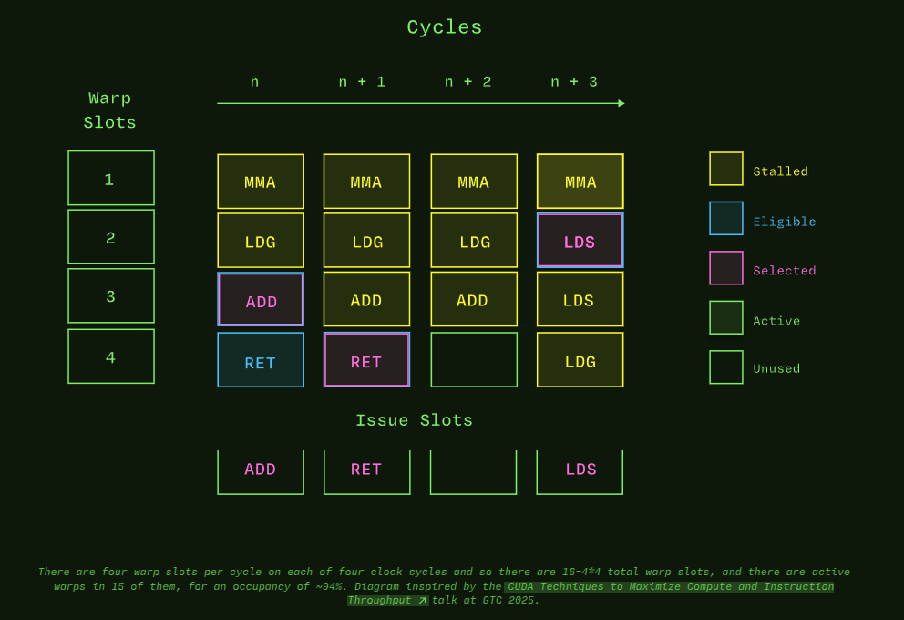
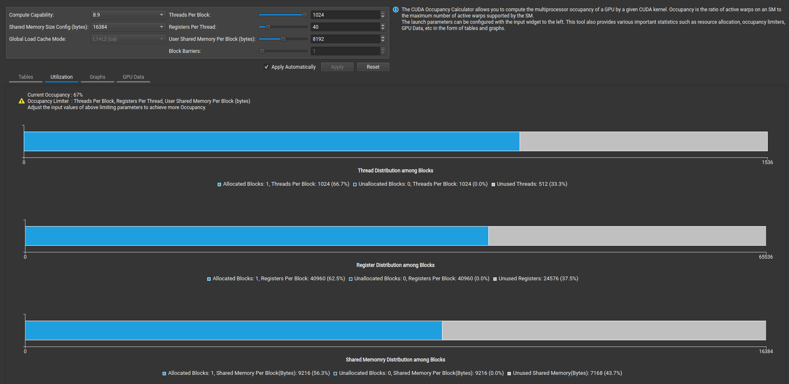
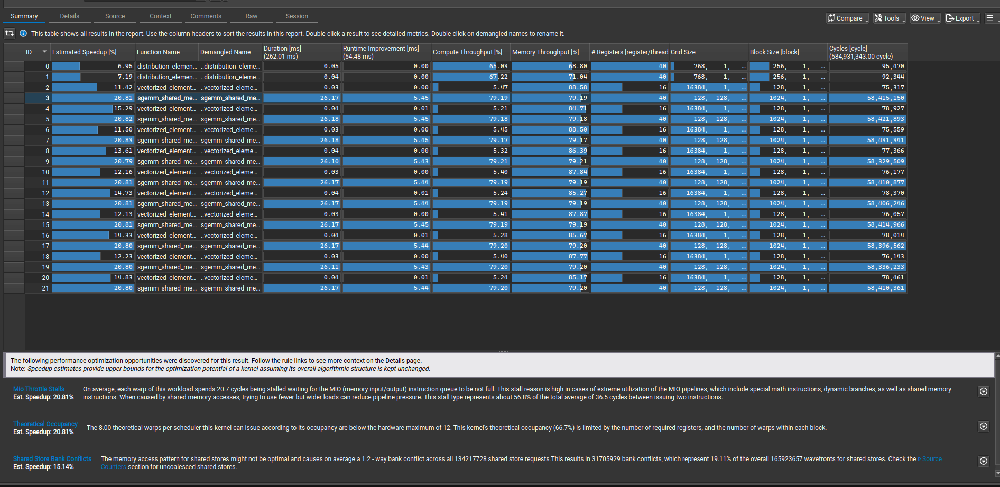
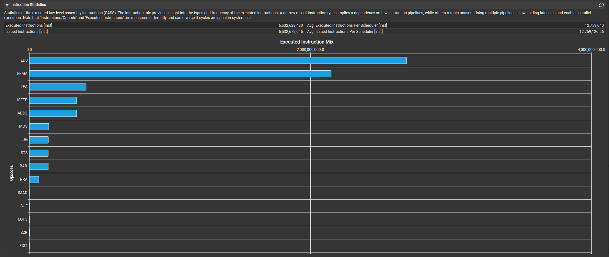

GEMM 基础与朴素优化
原文: Learn CUTLASS the Hard Way! by Kapil Sharma 许可证: CC BY 4.0 | 代码: gpusgobrr/explore-gemm 本文为原文的中文翻译与整理，交互式可视化部分已省略。
前言
作者希望深入理解 GEMM 优化的各个层面——从典型的 shared memory 缓存 kernel（如 PMPP 教材中的经典例子）到 tensor core、WMMA、swizzling、pipelining、autotuning 等现代技术。本文记录了在 RTX 4090 上从最朴素的 FP32 kernel 一路优化到 CUTLASS BF16 kernel 的完整过程。
完整实现代码：gpusgobrr/explore-gemm
GEMM 基础
GEMM（General Matrix Multiply）定义为：
其中：
- \(A\) 为 \(M \times K\) 矩阵
- \(B\) 为 \(K \times N\) 矩阵
- \(C\) 为 \(M \times N\) 矩阵（既是输入也是输出）
- \(\alpha\) 和 \(\beta\) 为标量系数
标准矩阵乘法 \(C = AB\) 是 \(\alpha = 1, \beta = 0\) 的特例。当 \(\beta \neq 0\) 时，GEMM 累加到已有矩阵 \(C\) 上。这种形式还支持融合操作，避免单独的 kernel 启动。
计算复杂度
每个元素 \(C[i,j]\) 需要一次点积：
对于 \(M \times K\) 和 \(K \times N\) 的矩阵：
- 总点积数：\(M \times N\)
- 每个点积的操作数：\(2K\)（K 次乘法 + K 次加法）+ 3 次标量操作
- 总 FLOPs：\(2MNK + MK\)（点积主导）
以 \(4096 \times 4096\) 矩阵乘法为例（\(M = N = K = 4096\)）：
- 总操作数：\(2 \times 4096^3 \approx 137\) GFLOPs
- 内存需求：\(3 \times 4096^2 \times 4\) bytes \(\approx\) 201 MB（float32）
硬件规格
所有 benchmark 在 NVIDIA GeForce RTX 4090 上运行。
SM 架构

| 规格 | RTX 4090 (Ada Lovelace) |
|---|---|
| 架构 | Ada Lovelace |
| CUDA Cores | 16,384 |
| SM 数量 | 128 |
| FP32 性能 | 82.6 TFLOPS |
| Tensor Cores | 512（第 4 代） |
| Tensor 性能（FP8） | 660.6 TFLOPS |
| 显存 | 24 GB GDDR6X |
| 显存带宽 | 1,008 GB/s |
| L1 Cache / Shared Memory（总计） | 16 MB |
| L2 Cache | 72 MB |
| 每 SM Shared Memory | 128 KB |
| 每 SM 寄存器 | 256 KB |
来源: NVIDIA Ada GPU Architecture Whitepaper
可以通过 cudaDeviceProp 直接加载这些参数：
for (int i = 0; i < deviceCount; ++i) {
cudaDeviceProp prop;
cudaGetDeviceProperties(&prop, i);
std::cout << "Device " << i << ": " << prop.name << "\n";
std::cout << " Compute capability: " << prop.major << "." << prop.minor << "\n";
std::cout << " Total global memory: " << (prop.totalGlobalMem >> 20) << " MB\n";
std::cout << " Shared memory per block: " << prop.sharedMemPerBlock << " bytes\n";
std::cout << " Shared memory per SM: " << prop.sharedMemPerMultiprocessor << " bytes\n";
std::cout << " Registers per block: " << prop.regsPerBlock << "\n";
std::cout << " Warp size: " << prop.warpSize << "\n";
std::cout << " Max threads per block: " << prop.maxThreadsPerBlock << "\n";
std::cout << " Max threads per SM: " << prop.maxThreadsPerMultiProcessor << "\n";
std::cout << " Number of SMs: " << prop.multiProcessorCount << "\n";
std::cout << " Max blocks per SM: " << prop.maxBlocksPerMultiProcessor << "\n";
std::cout << " L2 Cache Size: " << prop.l2CacheSize << " bytes\n";
}
Roofline 模型
Roofline 模型 帮助我们可视化 GEMM kernel 的性能瓶颈：
- Compute Bound（水平天花板）：可达到的最大 FLOPS（FP32 为 82.6 TFLOPS）
- Memory Bound（斜对角线）：受内存带宽限制的性能（1,008 GB/s）
从 memory-bound 到 compute-bound 的转折点出现在算术强度约 82 FLOP/byte 处。现代优化的 GEMM 操作通常具有较高的算术强度，属于 compute-bound 负载。
Naive 实现
概念
最简单的方法是为每个输出元素分配一个线程。每个线程独立执行：
- 加载 \(A\) 的一行（K 个元素）
- 加载 \(B\) 的一列（K 个元素）
- 计算点积
- 写入 \(C\) 的一个元素
Kernel
template <const uint block_size>
__global__ void sgemm_naive_kernel(int num_rows_a, int num_cols_b, int num_cols_a,
float alpha, const float *matrix_a,
const float *matrix_b, float beta, float *output_matrix)
{
const int output_row = blockIdx.x * block_size + (threadIdx.x % block_size);
const int output_col = blockIdx.y * block_size + (threadIdx.x / block_size);
if (output_row < num_rows_a && output_col < num_cols_b)
{
float accumulator = 0.0f;
for (int k_idx = 0; k_idx < num_cols_a; ++k_idx)
{
accumulator += matrix_a[output_row * num_cols_a + k_idx] *
matrix_b[k_idx * num_cols_b + output_col];
}
const int output_idx = output_row * num_cols_b + output_col;
output_matrix[output_idx] = alpha * accumulator + beta * output_matrix[output_idx];
}
}
Caller
直接在 torch Tensor 上调用上述 kernel：
void sgemm_naive(const torch::Tensor &matrix_a, const torch::Tensor &matrix_b,
torch::Tensor &output_matrix, float alpha, float beta)
{
const int num_rows_a = static_cast<int>(matrix_a.size(0));
const int num_cols_a = static_cast<int>(matrix_a.size(1));
const int num_cols_b = static_cast<int>(matrix_b.size(1));
constexpr uint block_size = 32;
dim3 block_dim(block_size * block_size); // 1024 threads per block
dim3 grid_dim(ceil_div(num_rows_a, block_size),
ceil_div(num_cols_b, block_size));
sgemm_naive_kernel<block_size><<<grid_dim, block_dim>>>(
num_rows_a, num_cols_b, num_cols_a,
alpha, d_matrix_a, d_matrix_b, beta, d_output_matrix);
}
性能分析

对于 M = N = K = 4096：
- Naive CUDA kernel 比 PyTorch 慢 133×（0.01× 加速比）
- 仅达到 PyTorch TFLOPS 的 0.76%
- 带宽利用率差 133×（0.90 GB/s vs 119.97 GB/s）
全局内存合并（Global Memory Coalescing）
概念
要理解内存合并，先了解 GPU 执行层次：
- 线程（Thread）：CUDA kernel 中的单个执行单元
- Warp：32 个线程一组，同时执行相同指令（SIMT — Single Instruction, Multiple Thread）
- Thread Block：逻辑线程分组（最多 1024 个线程），共享资源并可同步
- SM（Streaming Multiprocessor）：执行 thread block 的物理处理器
Warp 是基本执行单元：warp 中所有 32 个线程同时执行相同指令。当这些线程访问连续内存地址时，硬件可以将它们的内存请求合并为单个事务。现代 GPU DRAM 系统可以在一个事务中取回大块连续数据（32B、64B 或 128B cache line）。没有合并的话，32 次访问可能需要 32 个独立事务。
SM 相关要点：
- 每个 SM 有限的资源（寄存器、shared memory）
- 多个 thread block 竞争这些资源
- SM 可以在单个时钟周期内切换 warp，实现延迟隐藏——当一个 warp 等待内存时，另一个 warp 执行
- GEMM 效率取决于让所有 warp 调度器保持忙碌，且内存访问模式合并
为什么 Naive Kernel 慢？
添加调试信息查看线程映射：
Thread 0 ; Warp 0: Multiplying A[0][0] * B[0][0] = C[0][0]
Thread 1 ; Warp 0: Multiplying A[1][0] * B[0][0] = C[1][0]
...
Thread 31 ; Warp 0: Multiplying A[31][0] * B[0][0] = C[31][0]
Thread 32 ; Warp 1: Multiplying A[0][0] * B[0][1] = C[0][1]
Thread 33 ; Warp 1: Multiplying A[1][0] * B[0][1] = C[1][1]
可以看到 naive kernel 的内存访问模式是低效的。warp 中的每个线程访问 A[k][0]，其中 k 是 warp 内的线程 ID。线程访问分散的内存位置，每次访问需要独立的内存事务。
问题：线程以分散、非合并的模式访问内存。
解决方案只需交换行列计算中的 % 和 /：
// 关键改变：交换 % 和 / 以实现内存合并
const int output_row = blockIdx.x * block_size + (threadIdx.x / block_size);
const int output_col = blockIdx.y * block_size + (threadIdx.x % block_size);
Kernel
template <const uint block_size>
__global__ void sgemm_global_mem_coalesce_kernel(int num_rows_a, int num_cols_b, int num_cols_a,
float alpha, const float *matrix_a,
const float *matrix_b, float beta, float *matrix_c)
{
// 关键改变：交换 % 和 / 以实现合并访问
const int output_row = blockIdx.x * block_size + (threadIdx.x / block_size);
const int output_col = blockIdx.y * block_size + (threadIdx.x % block_size);
if (output_row < num_rows_a && output_col < num_cols_b)
{
float accumulator = 0.0f;
for (int k_idx = 0; k_idx < num_cols_a; ++k_idx)
{
accumulator += matrix_a[output_row * num_cols_a + k_idx] *
matrix_b[k_idx * num_cols_b + output_col];
}
const int output_idx = output_row * num_cols_b + output_col;
matrix_c[output_idx] = alpha * accumulator + beta * matrix_c[output_idx];
}
}
关键改变：连续 threadIdx.x 的线程现在访问 A 同一行中的连续元素，实现了合并访问。
性能分析

对于 M = N = K = 4096：
- 吞吐量：7.63× TFLOPS 提升（0.62 → 4.73 TFLOPS），仍仅为 PyTorch 的 5.8%
- 带宽：7.71× 带宽提升（0.90 → 6.94 GB/s）
性能有所提升，但仍远落后于 PyTorch。
Shared Memory 缓存
概念
即使有了合并访问，naive 和 coalesced kernel 仍反复从全局内存读取相同数据：
- 矩阵 \(A\) 的每个元素被读取 \(N\) 次（\(B\) 的每一列各一次）
- 矩阵 \(B\) 的每个元素被读取 \(M\) 次（\(A\) 的每一行各一次）
RTX 4090 每个 SM 有 128 KB shared memory（16 MB / 128 SMs），作为片上快速 cache。Shared memory 在 thread block 之间分配，block 内所有线程可访问。
优化策略：将矩阵 A 和 B 的 tile（分块）加载到快速 shared memory 中，利用缓存 tile 数据计算部分结果（多线程高复用），然后沿矩阵滑动 tile 计算最终结果——将 bandwidth-bound 问题转化为 compute-bound 问题。
注意：需要在两处同步线程——加载数据到 shared memory 之后，以及完成 tiled matmul 之后：
- 确保所有数据加载完毕后再做乘法计算
- 确保所有计算数据写回矩阵 C 后再处理下一组 tile
Kernel
template <const uint block_size>
__global__ void sgemm_shared_mem_kernel(int num_rows_a, int num_cols_b, int num_cols_a,
float alpha, const float *matrix_a,
const float *matrix_b, float beta, float *matrix_c)
{
const uint block_row = blockIdx.x;
const uint block_col = blockIdx.y;
__shared__ float tile_a[block_size * block_size];
__shared__ float tile_b[block_size * block_size];
const uint thread_row = threadIdx.x / block_size;
const uint thread_col = threadIdx.x % block_size;
const uint global_row = block_row * block_size + thread_row;
const uint global_col = block_col * block_size + thread_col;
matrix_a += block_row * block_size * num_cols_a;
matrix_b += block_col * block_size;
matrix_c += block_row * block_size * num_cols_b + block_col * block_size;
float accumulator = 0.0f;
for (int tile_idx = 0; tile_idx < num_cols_a; tile_idx += block_size)
{
if (global_row < num_rows_a && (tile_idx + thread_col) < num_cols_a)
tile_a[thread_row * block_size + thread_col] =
matrix_a[thread_row * num_cols_a + thread_col];
else
tile_a[thread_row * block_size + thread_col] = 0.0f;
if ((tile_idx + thread_row) < num_cols_a && global_col < num_cols_b)
tile_b[thread_row * block_size + thread_col] =
matrix_b[thread_row * num_cols_b + thread_col];
else
tile_b[thread_row * block_size + thread_col] = 0.0f;
__syncthreads();
matrix_a += block_size;
matrix_b += block_size * num_cols_b;
for (int dot_idx = 0; dot_idx < block_size; ++dot_idx)
{
accumulator += tile_a[thread_row * block_size + dot_idx] *
tile_b[dot_idx * block_size + thread_col];
}
__syncthreads();
}
if (global_row < num_rows_a && global_col < num_cols_b)
{
matrix_c[thread_row * num_cols_b + thread_col] =
alpha * accumulator + beta * matrix_c[thread_row * num_cols_b + thread_col];
}
}
性能分析

对于 M = N = K = 4096：
- 1.24× TFLOPS 提升（4.94 → 6.10 TFLOPS）
- 1.24× 带宽提升（7.23 → 8.94 GB/s）
- 比 naive 快 9.5×（0.64 → 6.10 TFLOPS）
- 仍仅为 PyTorch 的 7.8%
Shared memory 缓存相比纯 coalescing 仅带来约 24% 的提升，说明还没有有效隐藏内存延迟。
理解 GPU Occupancy
在进入更高级优化之前，需要理解 occupancy——它决定了 GPU 资源的利用率。
什么是 Occupancy？
Occupancy 是每个 SM 上活跃 warp 与最大可能 warp 的比值：

GPU 通过大规模并行隐藏内存延迟。当一个 warp 等待内存时，SM 立即切换执行另一个 warp。Occupancy 不直接提升性能，而是通过延迟隐藏间接提升。更高的 occupancy 意味着更多可用于计算的 warp，能更有效地隐藏延迟。如果 occupancy 低，硬件会闲置等待数据。
但 occupancy 不是一切。100% occupancy 但内存访问模式差的 kernel 仍可能性能差，因为可能导致每个线程的寄存器/shared memory 更少。
关键考量
每个线程从 SM 的寄存器文件获取寄存器。每线程更多寄存器意味着更少的并发线程：
| Registers/Thread | Max Threads | Active Warps | Occupancy |
|---|---|---|---|
| 32 | 1,536（硬件上限） | 48 | 100% |
| 64 | 1,024 | 32 | 66.7% |
| 128 | 512 | 16 | 33.3% |
Shared memory 在同一 SM 上的 thread block 之间分配：
| Shared Memory/Block | Max Blocks | 备注 |
|---|---|---|
| 0 KB | 32 | 无 shared memory 使用 |
| 24 KB | 4 | 适合中等 tiling |
| 48 KB | 2 | 大 tile，更少 block |
每 block 的线程数也影响每 SM 能容纳多少 block：
| Threads/Block | Warps/Block | Max Blocks/SM | Active Warps | Occupancy |
|---|---|---|---|---|
| 128 | 4 | 12 | 48 | 100% |
| 256 | 8 | 6 | 48 | 100% |
| 512 | 16 | 3 | 48 | 100% |
| 1024 | 32 | 1 | 32 | 66.7% |
我们 Shared Memory Kernel 的 Occupancy
分析当前 kernel：
constexpr uint BLOCKSIZE = 32;
dim3 block_dim(BLOCKSIZE * BLOCKSIZE); // 1024 threads per block
__shared__ float tile_a[32 * 32]; // 4 KB
__shared__ float tile_b[32 * 32]; // 4 KB
// 总计: 8 KB per block
Occupancy 计算：
- 每 block 线程数：1,024 threads（32 warps）
- 每 SM block 数（线程限制）：\(\lfloor 1536 / 1024 \rfloor = 1\) block
- 每 SM block 数（shared memory 限制）：\(\lfloor 102400 / 8192 \rfloor = 12\) blocks
- 每 SM block 数（硬件限制）：32 blocks
- 实际每 SM block 数：\(\min(1, 12, 32) = 1\) block
Active warps：\(1 \times 32 = 32\) warps
Occupancy：\(32 / 48 = 66.7\%\)
问题：大 block size（1,024 线程）限制每 SM 仅 1 个 block，导致仅 66.7% occupancy。
Nsight Compute Profiling
确认 occupancy 计算：

NCU Summary 提供了 kernel 仍然慢的原因：

查看指令混合，可以看到 LDS（shared memory 内加载）主导了指令混合，这不好：

下一步将专注于减少 kernel 中的 LDS 指令。